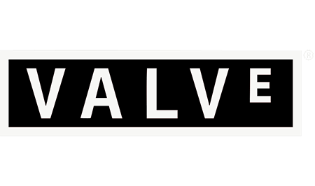

Valve Software
Valve started with Half-Life®, the first-person, sci-fi shooter game that’s won more than 50 Game of the Year and a few "Best Game Ever" awards. They expanded the Half-Life franchise with a sequel and Half-Life 2 Episodes 1 and 2. Then, they added the horror titles Left 4 Dead® and Left 4 Dead 2, the multiplayer combat franchise Team Fortress®, the #1 online action game Counter-Strike® and the award-winning puzzlers Portal™ and Portal 2. And they’re just getting warmed up.
In addition to Steam, there is Source, Valve's own state-of-the-art game engine. Its sophisticated character animation, advanced AI, real-world physics, shader-based rendering, and super extensibility have helped them create some of the most popular and good-looking games on the market for computer and consoles. Valve doesn't like to brag, but Source is considered the most flexible, comprehensive, and powerful game development environment out there. And it’s about to get even better.
When you give smart talented people the freedom to create without fear of failure, amazing things happen. Valve sees it every day. In fact, some of their best insights have come from their biggest mistakes. And they're ok with that! Since 1996, this approach has produced award-winning games, leading-edge technologies, and a groundbreaking social entertainment platform. Valve is always looking for creative risk-takers who can keep that streak alive.
Steam is Valve's direct pipeline to customers. It began as a little sleeper project—a handy tool to update Counter-Strike—and morphed pretty quickly into the world's largest online gaming platform. Steam guarantees instant access to more than 1,800 game titles and connects its 35 million active users to each other—and to us. Through Steam, fans can easily buy, play, share, modify, and build communities around Valve products as well as titles from other independent game studios. Steam is available in 237 countries and 21 different languages.
- Steam allows the user to have all (or most) of their games collected in one place.
- The Steam client keeps track of the user's time spent playing, achievements, progress, and saves with ease.
- All CD keys are stored and saved so that physical discs are a thing of the past and losing a game isn't an issue anymore.
- The creation of Steam has created a whole new level of connectedness amongst gamers. The friend's list allows users to contact and chat with their friends, even while playing games.
Some of Valve's Stats
Top Grossing Valve Games
- Half-Life (9.3 million, may include PS2 version) (December 2008)
- Half-Life 2 (6.5 million, may include Xbox version but does not include Steam sales)
- Counter-Strike (4.2 million) (December 2008)
- Counter-Strike: Condition Zero (2.9 million)(December 2008)
- The Orange Box (at least 1.5 million) (February 2008)
- Half-Life 2: Episode One (1.4 million)(December 2008)
- Left 4 Dead (at least 1 million, Xbox 360 version only) (January 2008)
My Favorite Valve Games
- Left 4 Dead/Left 4 Dead 2
- Portal/Portal 2
- Garry's Mod
- Dota 2
- Half Life Series
- Team Fortress 2